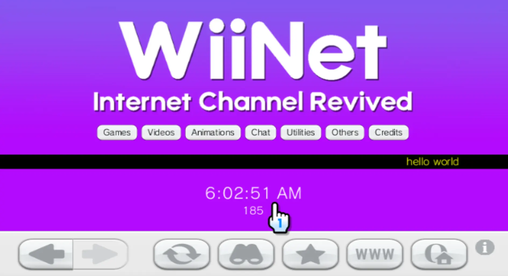

Benvenuto su WiiNet
WiiNet è un sito che porta tante funzioni al Canale Internet della Nintendo Wii.
Per accederci, visita questa pagina, wiinet.xyz sulla Wii.
WiiNet è un sito che porta tante funzioni al Canale Internet della Nintendo Wii.
Per accederci, visita questa pagina, wiinet.xyz sulla Wii.